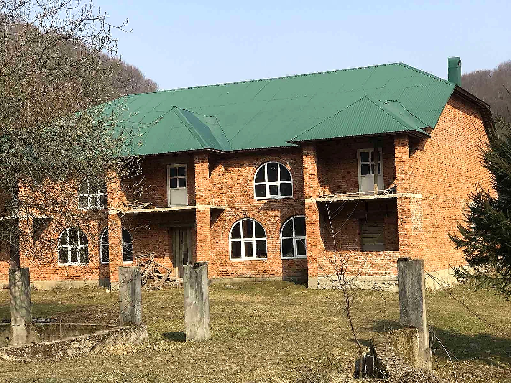
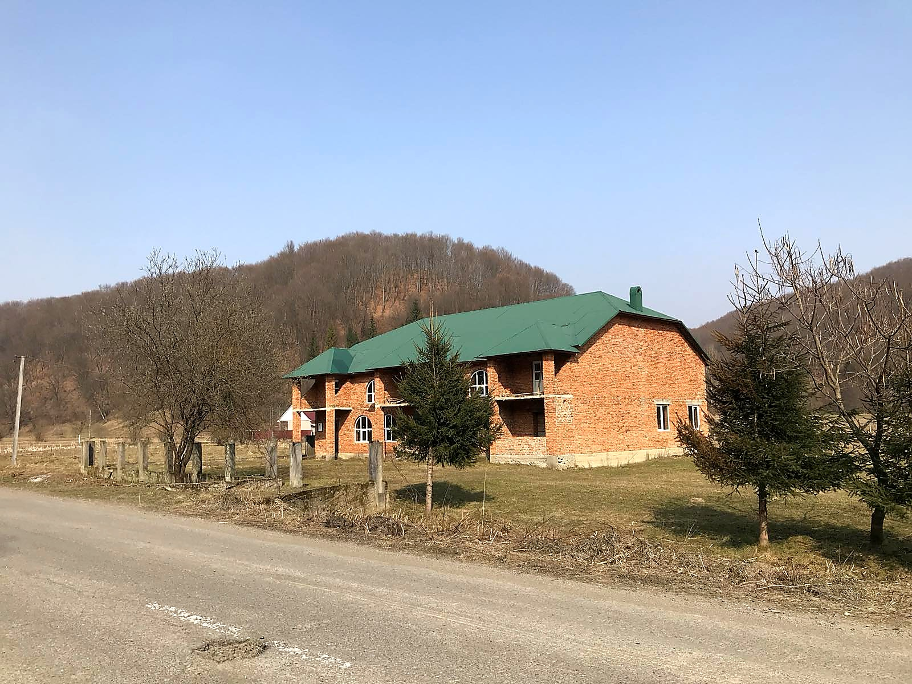
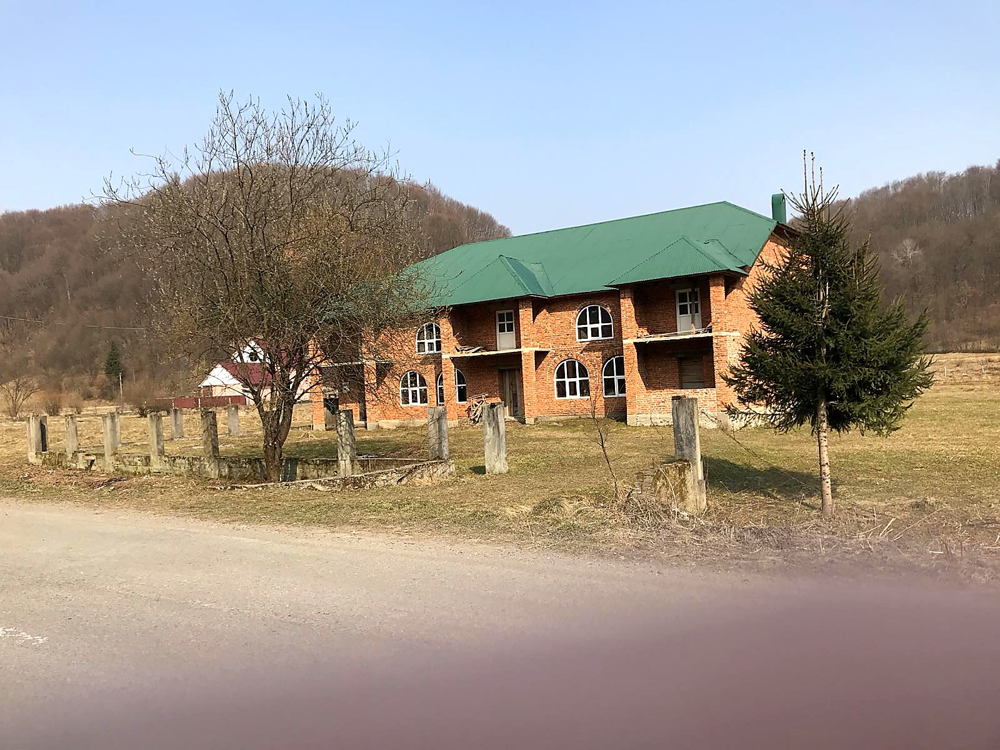
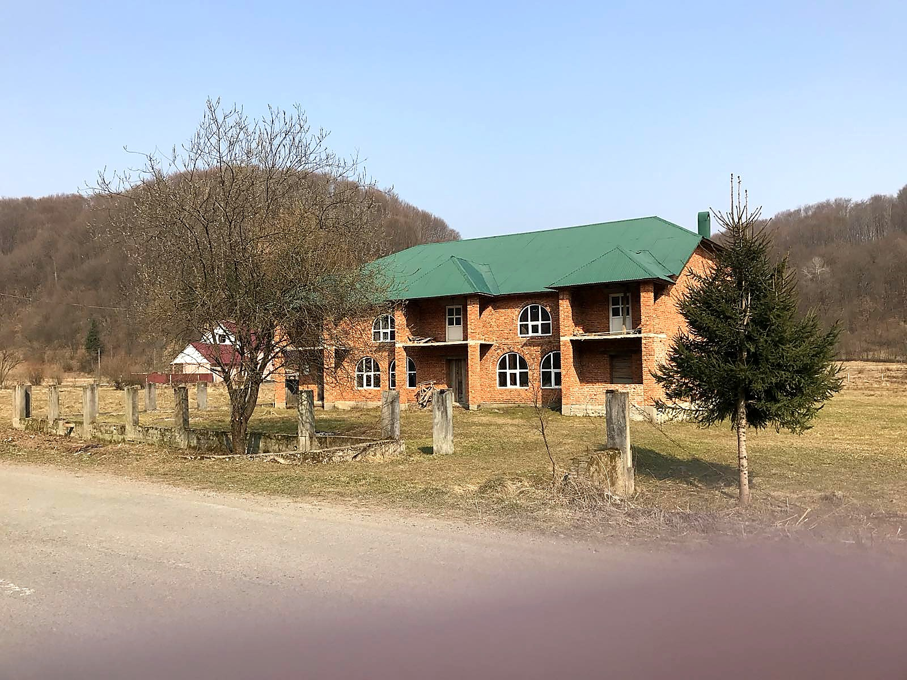
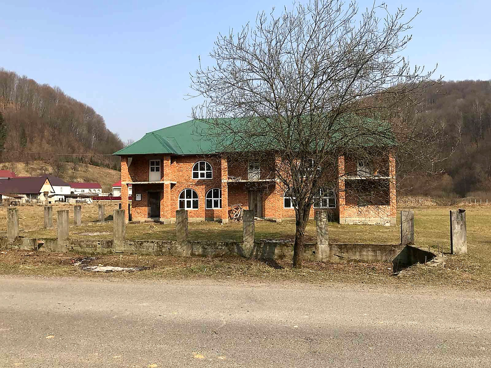
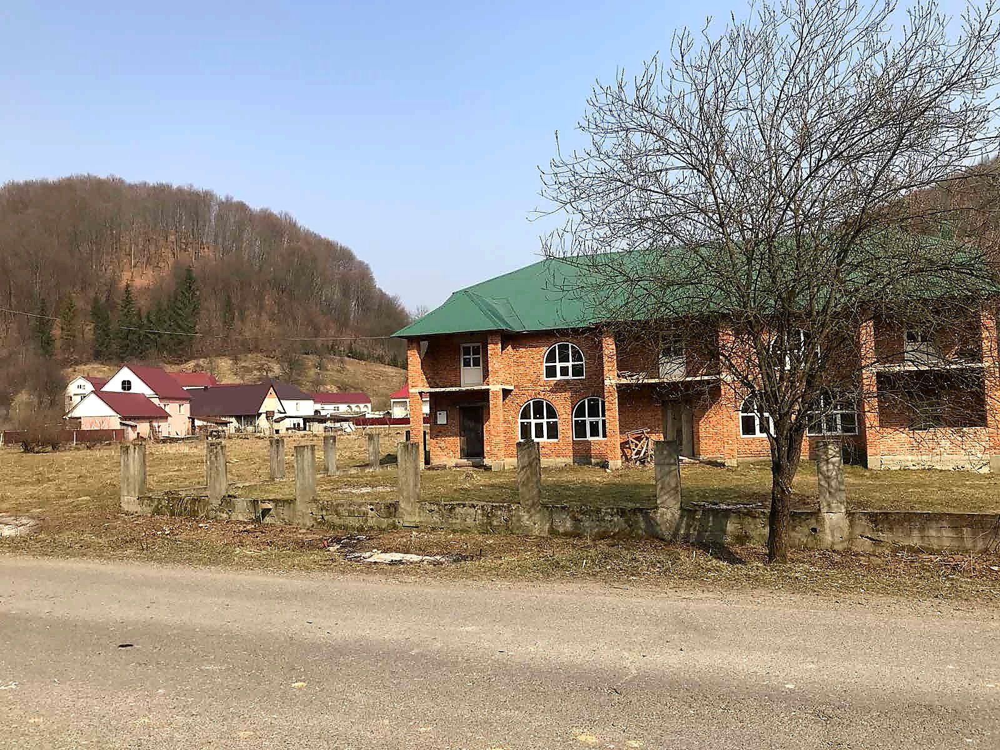
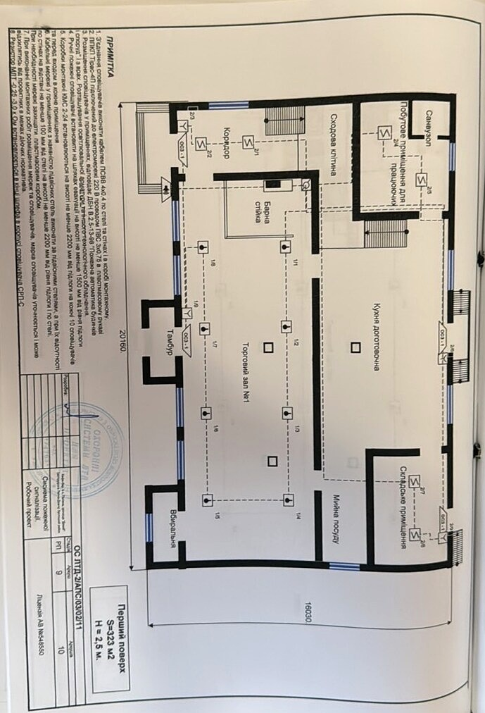
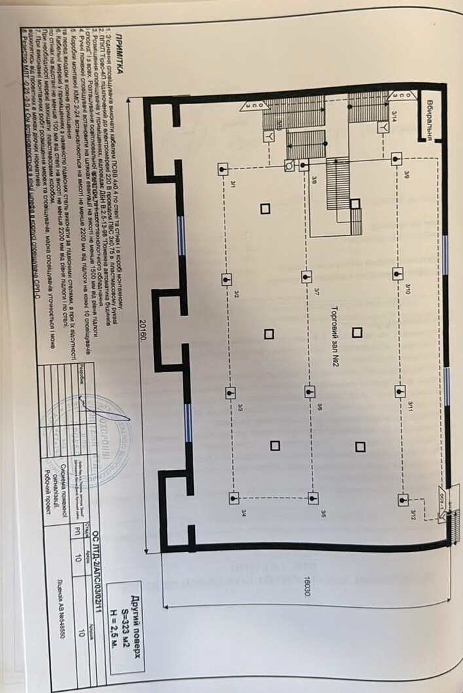

Галерея
Подивіться зблизька.

01 / 07





560 м² цегляної будівлі на 0.5 га з природним ставком і виходом лікувальних підземних вод. Закарпаття, Хустський район — там, де ще є місце для чогось справжнього.
Будівля проєктувалася під ресторан, бар і весільний зал — але великий метраж, гнучке планування та особлива територія дозволяють зробити з цього значно більше.
Дві площі по 280 м² на поверх, разом 560 м². Цегляні стіни, новий металевий дах, вікна та двері встановлено. Внутрішні перегородки на першому поверсі вже сформовані за оригінальним планом — кухня, зали, підсобки. Другий поверх — вільний простір під ваш сценарій.
Закарпаття — один з небагатьох регіонів Європи з природним багатством мінеральних і лікувальних джерел. Більшість відомих курортів регіону побудовані саме навколо них.
На цій ділянці є власний вихід підземної води з лікувальними властивостями. Це не просто бонус — це окрема цінність об'єкта, яка вирізняє його з усього ринку комерційної нерухомості Закарпаття.
Найочевидніший і найприбутковіший сценарій з огляду на лікувальну воду. Бальнеологія, SPA, оздоровчі ретрити — формат, на який є постійний попит з усієї України.
Початкове призначення об'єкта. Планування вже передбачає великий зал, професійну кухню, підсобні та технічні приміщення.
Карпатський туризм стабільно зростає, а локація поза курортною штовханиною — це окрема перевага. Тиша, ліс, своя вода.
Об'єкт пропонується "як є" — комерційна будівля з документами та земельною ділянкою у власності. Готова під будь-який внутрішній проєкт.


Тихе село серед карпатських схилів, біля лісу. Зручний заїзд автомобілем, поряд із основними напрямками Закарпаття — і водночас далеко від міського шуму та туристичної штовханини.






Готовий зустрітися на об'єкті, показати територію та все, що нижче рівня вікон. Надам повний пакет документів і фото на вимогу.
+380 68 092 40 02